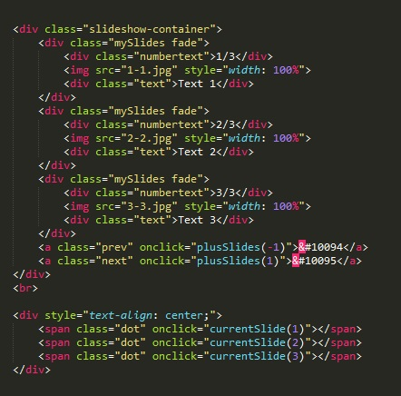
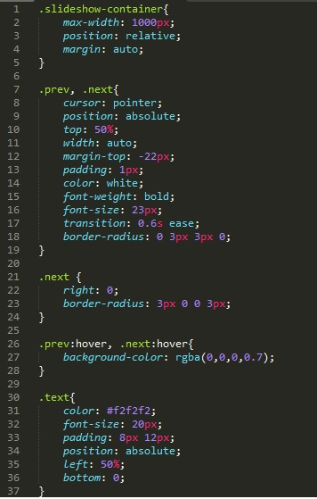
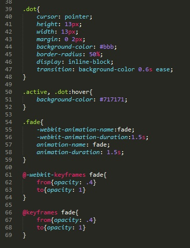
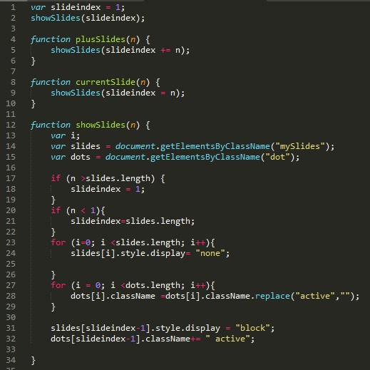

Рассмотрим сначал код HTML
Здесь нас два основных блока. Содержимое первого блока состоит из четырех блоков, первые три блока содержат:
Последний блок содержит две ссылки без события href, но в которых есть собитые onclick. В этом событии мы вызываем функцию plusSlides и даем входящий параметр "-1" и "1". Чуть позже объясню почему именно такие параметры передаем. Текстом ссылок являются знаки & #10094 и & #10095, что выглядит как скобки. Именно эти ссылки будут для нас кнопками перелистывания фотографий.
Во втором блоке мы имеем три тега span. Эти будут служиь так же кнопками в виде кружочков (их еще называют дотами, кнопками выбора картинки, три картинки и три кнопки каждая соответствует картинке). Span будет вызывать функцию currentSlide() в качестве входного параметра мы задаем номер нашей картинки
Теперь рассмотрим код CSS. Код будет состоять из двух частей. Рассмотрим перый:
.slideshow-container - стилизуем контейнер в котором будут находиться слайды
.prev, .next - стилизуем наши кнопки прокрутки
.next - здесь важно только обратить внимание на свойство right - тем самым мы привязываем нашу вторую кнопку прокрутки к правой стороне
.prev:hover, .next:hover - при наведении на кнопки прокрутки фоновый цвет будет меняться на черный, но с эффектом прозрачности 0.7
.text - стилизуем блоки которые будут отображать описание картинки
Рассмотрим вторую часть
.dot - стилизуем наши доты (кругляе кнопочки навигации)
.active, .dot:hover - стилизуем доты при наведении и доты у которых класс станет active/ При наведении или при активации цвет фона станет темнее
.fade - стилизуем блоки которые содержат картинку текст и номер картинки
@-webkit-keyframes fade - кейфрейм первой анимации, в которой говорится что прозрачность будет менять от 4 до 1. Вторая анимация кажется делает тоже самое, с этим не совсем понял
Рассмотрим теперь код JavaScript
В самом начале мы обьявляем глобальную переменную slideindex и присваиваем ей значение 1. От значения этой переменной зависит какая картинка будет отображаться. Вернее какой блок с картинкой будет получать значение свойства display - block, в то время как остальные два блока получат значение none.
Далее мы вызываем функцию showSlides. О ней чуть позднее. Для начала разберем функции plusSlides и currentSlide.
Начнем с функции plusSlides. что она делает? проще разобрать на примере. вот загрузился нас JS файл. значение переменной slideindex равно единице. Пользователь нажал кнопку вперед, которая вызыват нашу функцию с входным параметром единицей. так вот получается переменной равной единице прибавится единица, т.е. slideindex станет равна двум и с этим значением она полетит в функцию showSlide. Далее если пользователь нажмет кнопку назад, то функция plusSlides получит значение "-1". тоесть slideindex уменьшится на единицу (1-1=0) и со своим значением полетит в функцию showSlide
теперь разберем, что делает функция currentSlide. здесь все предельно просто, она тупо копирует свое входящее значение в переменную slideindex и запуливает это значение в функцию showSlide. каждый кружочек соответствует номеру блока с картинкой, нажали 2-ую кнопку отобразился второй блок.
Теперь рассмотрим функцию showSlide:
Сначала мы объявляем три переменной. i - будет использоваться в циклах.
Далее мы объявляем две переменные объктов с классами mySlides и dot (т.е. блоками с картинками и кружками-кнопками)
затем идет условие: если входящий параметр больше длины массива slides (а он равен - 3) то переменной slideindex присваивается значение 1. зачем так? да потому, что у нас всего три картинки, после того как после третьей картинки мы нажмем кнопку далее то индексу присвоится значение 1 и нам снова покажется первая картинка.
Далее опять идет сравнение: если входящий параметр меньше 1, то переменной slideindex присвоится значение длины массива slides. зачем? это для случая когда на слайде у нас будет открыта первая картинка, пользователь нажмет кнопку назад и значение переменной slideindex станет равно 0, а раз значение 0 то его надо поменять на 3.
Теперь разберемся с циклами. Первый цикл отключает все блоки с картинками, он присваивается в свойство display значение none всем блокам.
Второй цикл переписывает значение свойства class у всех элементов с классом dot
Ну а дальше идет обращение к элементу массива с индексом slideindex-1 и в свойство display записывается значение block. Далее так же обращаемся к элементу массива dot с индексом slideindex-1 и добавляем в свойство class слово active. Тут важно что перед словом active стоит пробел, это для того что бы class стал "dot active" а не "dotactive". Пара слов почему индекс массива равен (slideindex-1), да потому что индексы маасивов всегда начинаются с нуля. тоесть блок с первой картинкой в массиве будет иметь индекс - 0.